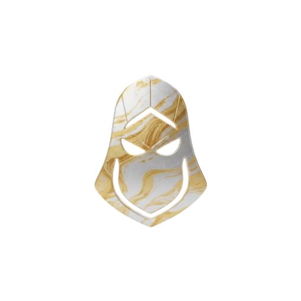

SKIN
BADANG
STATISTIK & STATUS NYAWA DAN TENAGA
- Serangan 9
- Penguasaan 7
- Kesukaran 8
- Kekebalan 6
- HP = 2500 +180
- Mana = --- +--
BIODATA
- Nama Pahlawan : HANG JEBAT
- Nama Sebenar : Jebat
- Gelaran : PENDEKAR LICIK SILAT MELAKA
- Umur : 19 Tahun
- Number Pahlawan : 007
- Jenis Pahlawan :  PENDEKAM/ PENDEKAR
- Makhluk : Manusia
- Bangsa : Melayu
- Negeri Asal : Kota Hilir, Melaka
- Pekerjaan : Pesilat Negara
- Tinggi : 186 cm
- Berat : 66 Kg
SKILL
-
PASIF: KEBANGKITAN PENDEKAR
- (Reset Cooldown / Buff - Fizikal)
- Setiap kali Jebat membunuh musuh, semua cooldown skillnya akan segera tamat.
- Efek tambahan: Serangan seterusnya selepas reset cooldown akan meningkatkan damage sebanyak 20% selama 3 saat.
-
SKILL 1: KERIS MENGHUNUS
- (Burst Damage / DOT - Fizikal)
- Level: 1-4
- Jebat melontarkan kerisnya ke satu musuh dan menikamnya secara langsung, memberikan damage segera.
- Selepas itu, musuh akan mengalami kerosakan berterusan (DOT) selama 3 saat.
- Jika musuh terkena efek DOT penuh, mereka akan mengalami slow sebanyak 30%.
- Damage Segera: 100/140/180/220 + 80% Total Physical Attack
- Damage DOT: 40/60/80/100 setiap saat selama 3 saat
- Cooldown: 8s/7s/6s/5s
- Radius: 6 unit (sasaran tunggal)
-
SKILL 2: JEBAT MENYELINAP
- (Stealth / Dash / Burst Damage - Fizikal)
- Level: 1-4
- Jebat masuk ke dalam mode ghaib (stealth) selama 5 saat, tidak dapat dilihat oleh musuh kecuali apabila dia menyerang.
- Jika dia menyerang dalam mode ini, serangan pertamanya akan memberikan bonus damage dan slow 40% selama 1.5 saat.
- Damage tambahan serangan pertama: 150/180/210/240 + 100% Total Physical Attack
- Cooldown: 12s/10s/8s/6s
-
SKILL 3: RENGKAH SILAT
- (CC / Stun / Dash - Fizikal)
- Level: 1-4
- Jebat menyerang musuh dengan langkah silat khasnya, menolak mereka ke hadapan sejauh 3 unit.
- Musuh yang terkena akan mengalami stun selama 1.5 saat.
- Selepas serangan selesai, Jebat akan melompat ke belakang sejauh 4 unit, mengelakkan serangan balas.
- Damage: 140/180/220/260 + 90% Total Physical Attack
- Cooldown: 10s/9s/8s/7s
- Radius: 3 unit ke hadapan (dash)
-
ULTI: JANGAN KAU BELOT
- (Execute / Burst Damage - Fizikal)
- Level: 1-3
- Jebat memilih satu musuh sebagai target utama dan menyerang mereka dengan rangkaian serangan silat bertubi-tubi.
- Jika musuh berada di bawah 30% HP, damage serangan ini akan meningkat sebanyak 50%.
- Damage: 300/400/500 + 150% Total Physical Attack
- Cooldown: 35s/30s/25s
- Radius: 1 unit (sasaran tunggal)
PERSONALITI
- Licik & Cekap, Menggunakan kelajuan dan strategi untuk mengalahkan musuh.
- Tidak mudah tunduk, Berpegang teguh kepada prinsipnya sendiri.
- Tegas & Berani, Tidak gentar walaupun berhadapan dengan bahaya.
HIKAYAT
Di sebuah bandar kecil, seorang pemuda yang bernama Jebat hidup dalam keadaan yang agak berbeza berbanding teman-temannya. Jebat dikenali sebagai seorang yang keras kepala dan sukar untuk mengikut kata orang. Dalam setiap tindakannya, dia lebih suka mendengar suara hatinya sendiri, berbanding menerima arahan daripada orang lain. Meskipun sikapnya agak nakal, Jebat memiliki hati yang baik dan keberanian yang luar biasa.
Keluarga Jebat tidak pernah menyokong minatnya dalam seni bela diri. Mereka sering berkata bahawa silat adalah suatu pembaziran masa dan tenaga. Namun, Jebat tetap bertekad untuk mengikuti jalan yang dipilihnya. Suatu hari, ketika berjalan melalui pasar, dia bertemu dengan seorang tok guru silat yang terkenal dengan kepandaian dan kebijaksanaannya. Tok guru itu melihat potensi dalam diri Jebat dan mengajaknya untuk belajar silat. Walaupun keluarganya menentang, Jebat tetap berkeras untuk menuntut ilmu silat.
Di bawah bimbingan tok guru tersebut, Jebat mula belajar tentang seni pertahanan diri, terutamanya seni bernyelinap dan menggunakan kekuatan dengan penuh kebijaksanaan. Walaupun dia tidak mudah untuk menerima arahan atau aturan, sedikit demi sedikit, Jebat mula memahami kepentingan disiplin dan ketekunan dalam berlatih. Di saat-saat yang penuh cabaran itu, Jebat menyedari bahawa keberanian dan keteguhan pendirian adalah dua perkara yang perlu dimiliki oleh setiap pahlawan.
Suatu hari, ketika Jebat sedang menyelami lebih dalam cerita-cerita tentang pahlawan Melayu, dia menemukan sebuah buku tua yang disimpan oleh tok guru silatnya. Buku itu menceritakan kisah Hang Tuah dan Hang Jebat, yang sangat mirip dengan dirinya. Hang Jebat dalam cerita itu bukanlah seorang yang jahat, tetapi seorang yang setia dan berani, yang membuat keputusan berdasarkan prinsipnya sendiri. Kisah itu sangat menyentuh hatinya, terutamanya apabila dia membaca bagaimana Hang Tuah, sahabat sejatinya, terpaksa menurut perintah Sultan untuk membunuhnya. Tetapi ternyata, Hang Tuah dan Hang Jebat tidak benar-benar berpisah—mereka berdua berjuang secara rahsia demi tanah air.
Buku itu memberi Jebat inspirasi yang mendalam. Dia menyedari bahawa dia tidak perlu mengikut jejak langkah orang lain, tetapi perlu berpegang teguh pada prinsipnya. Dengan semangat yang baru, Jebat terus berlatih silat dengan penuh dedikasi. Dia ingin menjadi pahlawan yang hebat, bukan hanya untuk dirinya, tetapi juga untuk melindungi orang yang dia sayangi.
Walaupun Tuah dan Jebat datang dari latar belakang yang berbeza—Tuah yang baik dan mendengar kata, serta Jebat yang keras kepala tetapi teguh pendiriannya—mereka berdua akhirnya berkongsi satu tujuan yang sama. Mereka berdua ingin menjadi pahlawan yang hebat, mempertahankan diri mereka dan masyarakat sekitar mereka. Setelah membaca kisah Hang Tuah dan Hang Jebat, mereka mula menyedari bahawa keberanian, kesetiaan, dan pengorbanan adalah nilai-nilai yang perlu dipegang teguh.
Mereka berdua bertekad untuk berlatih silat dengan lebih giat lagi, menyedari bahawa mereka bukan hanya berlatih untuk diri mereka sendiri, tetapi juga untuk mempertahankan tanah air dan kehormatan. Dalam hati mereka berdua, tercetus cita-cita yang tinggi: menjadi pahlawan yang bukan hanya hebat di medan perang, tetapi juga menjadi pelindung kepada mereka yang lemah dan tidak berdaya.
Cerita Tuah dan Jebat ini mengajar mereka—dan kita semua—bahawa dalam setiap perjuangan, kesetiaan dan keberanian adalah kekuatan yang paling penting, dan persahabatan sejati akan selalu menjadi pemangkin kepada kejayaan.